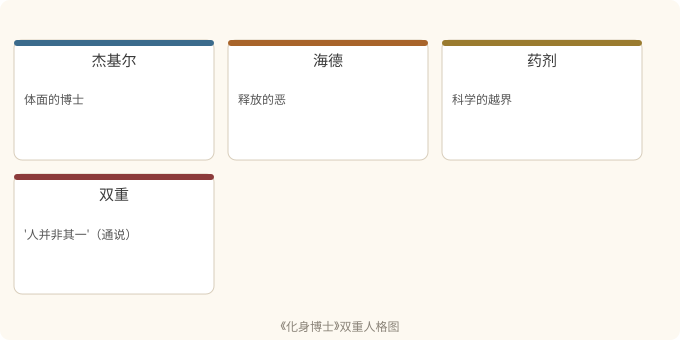

化身博士
一、基本信息
| 作者 | 罗伯特·路易斯·史蒂文森 |
|---|---|
| 成书/出版 | 1886年（通说待核；Britannica B294 Quick Facts 载 Kidnapped (1886)——本篇正文未载） Robert Louis Stevenson — Encyclopaedia Britannica（百科全书） |
| 国别/地区 | 英国 |
| 时代 | 近代 · 19世纪 |
| 体裁 | 中篇小说 |
| 语言 | 英语 |

《化身博士》双重人格图（主题·结构图）
二、创作背景
作者页（B294）：史蒂文森'a writer of originality and power who produced brilliant adventure stories with subtle moral overtones'（B294 作者页定位）。
题材（通说待核）：杰基尔博士的药剂与海德先生的恶——人格分裂的哥特寓言。
三、内容脉络
律师厄特森追查：杰基尔与海德的药剂秘密（通说待核）。
'人并非其一，而是二者'（通说待核——杰基尔自白）。
四、主要人物表
| 人物 | 身份 | 说明 |
|---|---|---|
| 杰基尔/海德 | 博士与恶人 | 一人两面（通说待核） |
| 厄特森 | 律师 | 追查者（通说待核） |
五、主题与艺术特点
- 人格的双重性（通说）。
- '化身'：科学的越界（通说待核）。
- 维多利亚的伪善（通说待核）。
六、影响与评论
- 作者页：史蒂文森'原创与力量'（B294 作者页口径）。
Robert Louis Stevenson — Encyclopaedia Britannica（百科全书） - 'Jekyll and Hyde'进入英语（通说待核）。
Robert Louis Stevenson — Encyclopaedia Britannica（百科全书）
七、阅读建议
难点
- 多重叙述（厄特森/拉尼翁/自白）。
- 维多利亚哥特语境。
- 《化身博士》（人民文学出版社/上海译文版本，通说待核）。
- 英文原版（公有领域）。
史蒂文森代表作之一。
八、待核实
- 1886年出版（Longmans, Green说）核对。
- 杰基尔/海德/厄特森人名核对。
- 'Jekyll and Hyde'英语习语待核。
本页主要来源
罗伯特·路易斯·史蒂文森的其他收录作品：化身博士